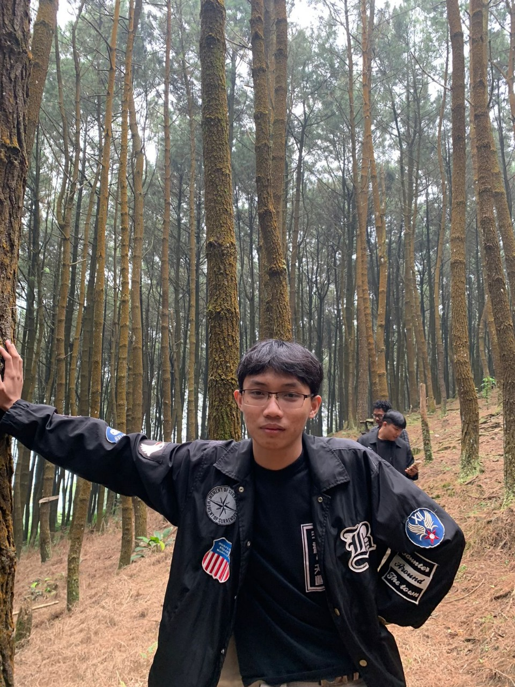

Hallo, Saya andre
"Saya seorang Cyber security yang berbasis di Tangerang, Indonesia. Saya membantu bisnis mengamankan aset dan data digital mereka."

"Saya seorang Cyber security yang berbasis di Tangerang, Indonesia. Saya membantu bisnis mengamankan aset dan data digital mereka."
Memastikan keamanan jaringan komputer dari ancaman seperti akses tidak sah dan serangan siber.
Memanfaatkan teknik enkripsi untuk melindungi data sensitif selama penyimpanan dan transmisi.
Melakukan audit keamanan dan mengidentifikasi potensi kerentanan pada infrastruktur IT.
Mengumpulkan dan menganalisis informasi tentang ancaman keamanan siber saat ini dan yang potensial.
Saya lahir di Tangerang dan selalu memiliki minat terhadap teknologi dan keamanan siber. Dengan dasar yang kuat di bidang IT, saya berspesialisasi dalam melindungi organisasi dari ancaman dunia maya yang terus berkembang.
Dengan pengalaman langsung dalam pengujian penetrasi, audit keamanan, dan analisis ancaman, saya membantu organisasi membangun sistem yang aman dan memitigasi risiko. Saya berusaha untuk selalu mengikuti perkembangan tren terkini dalam keamanan siber untuk menawarkan perlindungan terbaik bagi klien saya.
"Andre membantu kami mengamankan jaringan kami dan menerapkan sistem firewall yang solid. jago banget dah pokoknya!

it production
"Berkat Andre, kami dapat mengidentifikasi kerentanan kritis dan memperbaikinya sebelum pelanggaran besar terjadi. Sangat direkomendasikan!"

founder kacang polong
"Sejak bekerja sama dengan andre, kami merasa lebih aman dan percaya diri dalam mengelola data pelanggan. Mereka memberikan analisis mendalam dan solusi praktis. Rekomendasi terbaik!"
kartap